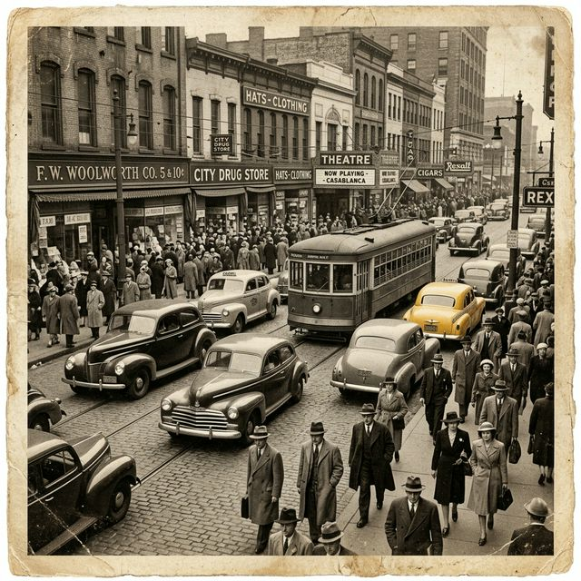
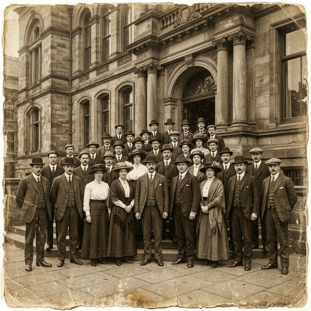
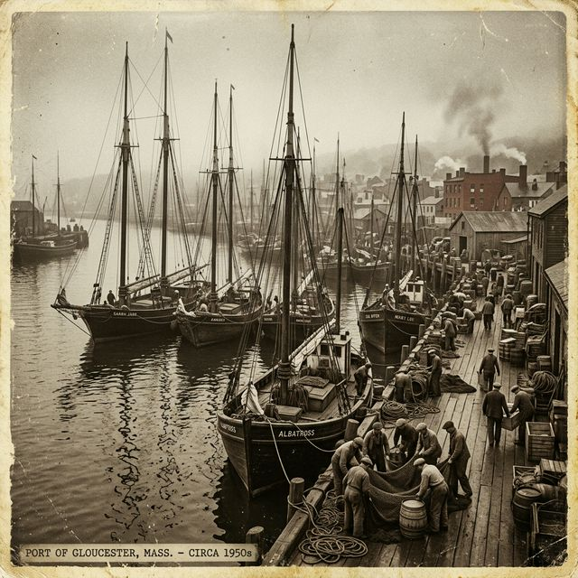

근대화의 물결 속에서, 우리는 무엇을 잃었는가
사진 속 인물들의 눈빛에는 시대의 무게가 고스란히 담겨있다. 낯선 서양식 건물을 배경으로 단정히 차려입은 이들은 격변의 시대를 묵묵히 살아낸 보통 사람들이다. 그들의 이름은 역사책에 남지 않았지만, 이 한 장의 사진이 그들의 존재를 증언한다.
새로운 문물이 밀려들던 그 시절, 사진이라는 기술 자체가 경이의 대상이었다. 셔터가 눌리는 순간, 시간은 멈추고 기억은 은판 위에 새겨졌다.
HISTORICAL MOMENTS — DIGITAL ARCHIVE

격동의 시대, 카메라 렌즈에 담긴 평범한 사람들의 이야기.
오래된 서랍 속 빛바랜 사진 한 장. 누군가의 삶이, 어떤 시대의 숨결이 그 안에 고요히 잠들어 있습니다.
이 아카이브는 그 침묵하는 순간들에 다시 목소리를 돌려주고자 합니다.
The Dawn of Modernity

사진 속 인물들의 눈빛에는 시대의 무게가 고스란히 담겨있다. 낯선 서양식 건물을 배경으로 단정히 차려입은 이들은 격변의 시대를 묵묵히 살아낸 보통 사람들이다. 그들의 이름은 역사책에 남지 않았지만, 이 한 장의 사진이 그들의 존재를 증언한다.
새로운 문물이 밀려들던 그 시절, 사진이라는 기술 자체가 경이의 대상이었다. 셔터가 눌리는 순간, 시간은 멈추고 기억은 은판 위에 새겨졌다.
새벽 네 시, 상인들이 하나둘 자리를 펼치기 시작하면 골목에는 삶의 소리가 차오른다. 찐빵 찌는 냄새, 생선 비린내, 그리고 부지런한 발소리들.
손때 묻은 편지지에 꾹꾹 눌러쓴 글자들. 전쟁터에서도 가족을 그리는 마음은 변하지 않았다. 붓 끝에 실린 멀고 먼 그리움.
Life Goes On

부두에 선 사람들의 손이 흔들린다. 어떤 이는 새로운 삶을 향해 배에 오르고, 어떤 이는 돌아오는 사람을 맞으러 나왔다. 항구는 언제나 만남과 이별이 교차하는 곳.
바닷바람이 땡볕 속에서 옷깃을 파고든다. 돛대에 묶인 밧줄처럼 단단한 무언가가 이 사람들을 이 자리로 데려왔을 것이다. 가족, 생계, 혹은 희망.
불황 속에서도 책은 팔렸다. 종이 냄새가 가득한 좁은 책방, 주인은 매일 새벽 문을 열었다. 알고 싶다는 욕망은 가난도 막을 수 없었다.
전쟁의 기운이 감돌던 그 시절에도 아이들은 뛰어놀았다. 돌과 흙으로 만든 놀이터. 웃음소리만은 그 어떤 시대도 빼앗아 갈 수 없었다.
The First Dawn of Liberation
정오의 라디오 방송이 끝나자 거리는 순식간에 인파로 가득 찼다. 소리 소문도 없이 번지는 소식, 사람들은 서로를 끌어안고 울었다. 눈물이 광복의 첫 비였다.
수십 년의 기다림이 한꺼번에 터져나왔다. 어떤 이는 만세를 외치고, 어떤 이는 무릎을 꺾고 땅에 엎드렸다. 그것은 기쁨이자 통곡이었다.
사진사의 셔터는 멈추지 않았다. 역사는 그렇게 한 장씩 은판 위에 새겨졌고, 우리는 오늘 그 기록을 통해 그 날의 공기를 느낀다.
Reconstruction & Growth
굴뚝에서 피어오르는 연기는 그 시절 희망의 상징이었다. 사람들은 공장을 향해 걸었고, 국가는 성장을 향해 달렸다. 그 뒤에 무엇을 잃어버렸는지는 나중에야 알게 되었다.
기계 돌아가는 소리, 쇳덩이 두드리는 소리. 폐허 위에 세워지는 도시의 첫 맥박이었다.
판잣집 교실, 나무 의자, 분필 가루가 날리던 칠판. 그러나 아이들의 눈빛은 누구보다 빛났다. 배움에 대한 열망은 가난도, 전쟁도 꺾을 수 없었다.
그 선생님은 오십 년 뒤, 자신의 제자 중 누군가가 이 나라를 이끌게 되리라는 것을 알았을까.
새로 놓인 다리 위를 수백 명이 걷고 있다. 이 다리가 연결하는 것은 단순히 강의 양안만이 아니다. 과거와 미래, 농촌과 도시, 전통과 근대가 여기서 만났다.
강물은 예나 지금이나 같은 방향으로 흐르지만, 다리 위의 풍경은 해마다 달라졌다.